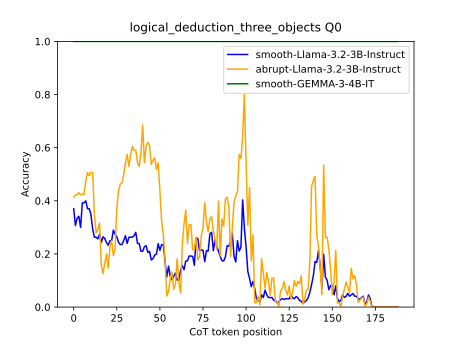
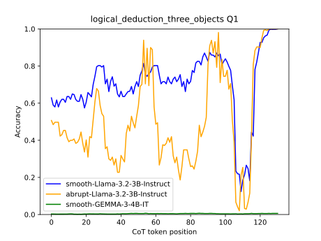
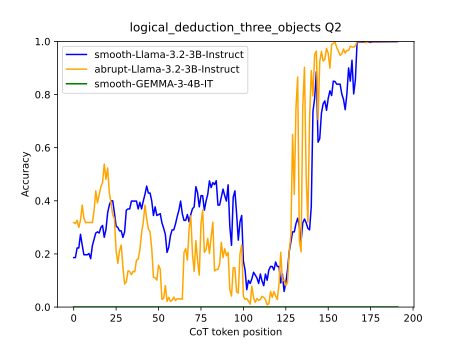
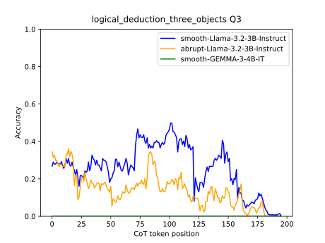
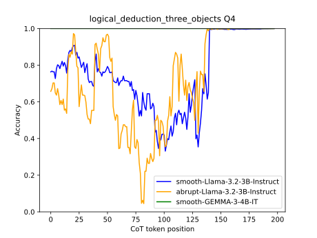
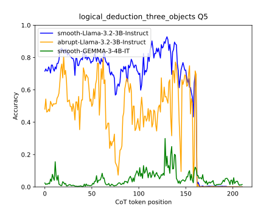
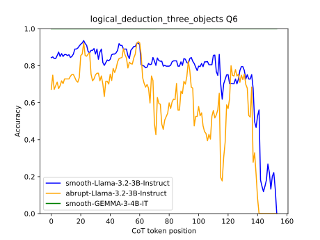
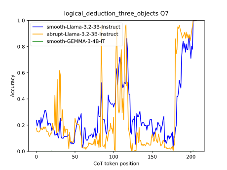

Logical Deduction Three Objects Dataset with GEMMA-3-4B-IT
Question 0
The following paragraphs each describe a set of three objects arranged in a fixed order. The statements are logically consistent within each paragraph. On a branch, there are three birds: a blue jay, a quail, and a falcon. The falcon is to the right of the blue jay. The blue jay is to the right of the quail.
Options:
(A) The blue jay is the second from the left
(B) The quail is the second from the left
(C) The falcon is the second from the left
Correct answer: (A)

To solve this, let's analyze the given statements:
1. The falcon is to the right of the blue jay.
2. The blue jay is to the right of the quail.
From statement 2, we know the order is: quail, blue jay, falcon.
Now, let's examine the options:
(A) The blue jay is the second from the left: This would mean the order is quail, blue jay, falcon, which contradicts statement 1.
(B) The quail is the second from the left: This would mean the order is quail, falcon, blue jay, which also contradicts statement 1.
(C) The falcon is the second from the left: This would mean the order is quail, falcon, blue jay, which is consistent with both statements.
Therefore, the correct answer is:
ANSWER: C
Question 1
The following paragraphs each describe a set of three objects arranged in a fixed order. The statements are logically consistent within each paragraph. In an antique car show, there are three vehicles: a motorcyle, a limousine, and a convertible. The motorcyle is newer than the limousine. The convertible is newer than the motorcyle.
Options:
(A) The motorcyle is the oldest
(B) The limousine is the oldest
(C) The convertible is the oldest
Correct answer: (B)

To solve this, let's analyze the statements step by step:
1. The motorcyle is newer than the limousine.
2. The convertible is newer than the motorcyle.
From statement 1, we know the order is: limousine > motorcyle.
From statement 2, we know the order is: motorcyle > convertible.
Now, we can combine these two orders to get the overall order: limousine > motorcyle > convertible.
Since the motorcyle is the middle object in the order, it is not the oldest. The limousine is the oldest.
ANSWER: B
Question 2
The following paragraphs each describe a set of three objects arranged in a fixed order. The statements are logically consistent within each paragraph. On a shelf, there are three books: a blue book, an orange book, and a red book. The blue book is the rightmost. The orange book is the leftmost.
Options:
(A) The blue book is the second from the left
(B) The orange book is the second from the left
(C) The red book is the second from the left
Correct answer: (C)

To solve this, let's analyze the information given:
1. The blue book is the rightmost.
2. The orange book is the leftmost.
From these two statements, we can conclude that the order of the books from left to right is: orange,?, blue.
Now, let's examine the options:
(A) The blue book is the second from the left: This would mean the order is orange, blue,?, which contradicts the given information that the blue book is the rightmost.
(B) The orange book is the second from the left: This would mean the order is?, orange, blue, which also contradicts the given information that the blue book is the rightmost.
(C) The red book is the second from the left: This would mean the order is?, orange, blue, which is consistent with the given information that the blue book is the rightmost.
Therefore, the correct answer is:
ANSWER: C
Question 3
The following paragraphs each describe a set of three objects arranged in a fixed order. The statements are logically consistent within each paragraph. On a branch, there are three birds: a robin, a blue jay, and a crow. The robin is to the right of the crow. The robin is to the left of the blue jay.
Options:
(A) The robin is the rightmost
(B) The blue jay is the rightmost
(C) The crow is the rightmost
Correct answer: (B)

To solve this, let's analyze the information given:
1. The robin is to the right of the crow.
2. The robin is to the left of the blue jay.
From statement 1, we know the order is: crow, robin,? (we don't know the position of the blue jay yet)
From statement 2, we know the order is:?, robin, blue jay.
Now, we can combine these two pieces of information. Since the robin is both to the right of the crow and to the left of the blue jay, it means the crow must be to the left of the robin, and the robin must be to the left of the blue jay. This is consistent with the order: crow, robin, blue jay.
Since the crow is the leftmost, and the robin is to its right, the robin must be the rightmost.
Therefore, the correct answer is:
ANSWER: A
Question 4
The following paragraphs each describe a set of three objects arranged in a fixed order. The statements are logically consistent within each paragraph. On a shelf, there are three books: a green book, a red book, and a blue book. The red book is the rightmost. The blue book is to the right of the green book.
Options:
(A) The green book is the rightmost
(B) The red book is the rightmost
(C) The blue book is the rightmost
Correct answer: (B)

To solve this, let's analyze the information given:
1. The red book is the rightmost.
2. The blue book is to the right of the green book.
From statement 1, we know the red book is on the right side. From statement 2, we know the blue book is to the right of the green book, which means the green book must be on the left side.
Now, let's look at the options:
(A) The green book is the rightmost: This cannot be true because the red book is the rightmost, and the green book is to the left of the red book.
(B) The red book is the rightmost: This is true based on statement 1.
(C) The blue book is the rightmost: This cannot be true because the blue book is to the right of the green book, and the green book is to the left of the red book.
Therefore, the correct answer is:
ANSWER: B
Question 5
The following paragraphs each describe a set of three objects arranged in a fixed order. The statements are logically consistent within each paragraph. A fruit stand sells three fruits: apples, peaches, and mangoes. The mangoes are less expensive than the peaches. The apples are less expensive than the mangoes.
Options:
(A) The apples are the second-most expensive
(B) The peaches are the second-most expensive
(C) The mangoes are the second-most expensive
Correct answer: (C)

To solve this problem, let's analyze the given statements:
1. The mangoes are less expensive than the peaches.
2. The apples are less expensive than the mangoes.
From statement 1, we know that the order of prices from least expensive to most expensive is: apples, mangoes, peaches.
From statement 2, we know that the apples are less expensive than the mangoes, which is consistent with the order we already have.
Now, let's examine the options:
(A) The apples are the second-most expensive: This would mean that the order is apples, mangoes, peaches, which contradicts statement 1.
(B) The peaches are the second-most expensive: This would mean that the order is apples, peaches, mangoes, which is consistent with both statements.
(C) The mangoes are the second-most expensive: This would mean that the order is apples, mangoes, peaches, which contradicts statement 1.
Therefore, the correct answer is:
ANSWER: B
Question 6
The following paragraphs each describe a set of three objects arranged in a fixed order. The statements are logically consistent within each paragraph. In an antique car show, there are three vehicles: a tractor, a truck, and a minivan. The minivan is newer than the truck. The tractor is older than the truck.
Options:
(A) The tractor is the newest
(B) The truck is the newest
(C) The minivan is the newest
Correct answer: (C)

To solve this problem, let's analyze the given statements step by step:
1. The minivan is newer than the truck.
2. The tractor is older than the truck.
From statement 1, we know that the minivan is newer than the truck. This means the minivan cannot be the oldest, as it is newer than the truck.
From statement 2, we know that the tractor is older than the truck. This means the tractor cannot be the newest, as it is older than the truck.
Now, let's consider the remaining option: the truck. Since the minivan is newer than the truck, and the tractor is older than the truck, the truck must be the newest.
Therefore, the correct answer is:
ANSWER: B
Question 7
The following paragraphs each describe a set of three objects arranged in a fixed order. The statements are logically consistent within each paragraph. In a golf tournament, there were three golfers: Eve, Rob, and Mel. Rob finished below Mel. Mel finished below Eve.
Options:
(A) Eve finished first
(B) Rob finished first
(C) Mel finished first
Correct answer: (A)

To solve this problem, let's analyze the information given in each paragraph.
Paragraph 1:
There is no information about the order of the golfers in this paragraph.
Paragraph 2:
- Rob finished below Mel.
- Mel finished below Eve.
From this, we can conclude that Mel finished above Rob and Eve.
Now, let's look at the options:
(A) Eve finished first
- This is possible, but we can't confirm it yet.
(B) Rob finished first
- This is not possible, as Rob finished below Mel, and Mel finished below Eve.
(C) Mel finished first
- This is also possible, but we can't confirm it yet.
However, we can combine the information from both paragraphs. Since Mel finished above Rob and Eve, and Rob finished below Mel, it means that Mel must be above both Rob and Eve. Therefore, Mel cannot be first, as Eve must be above Mel.
So, the only option that is consistent with the information given is:
(A) Eve finished first